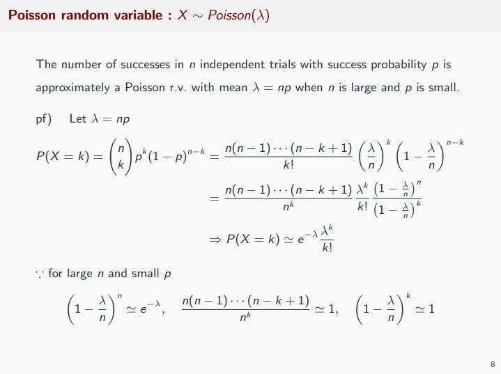
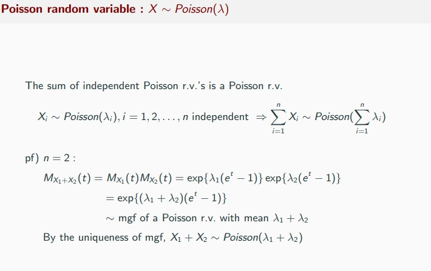
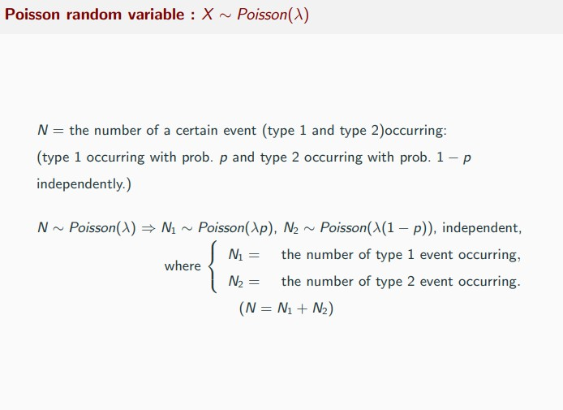
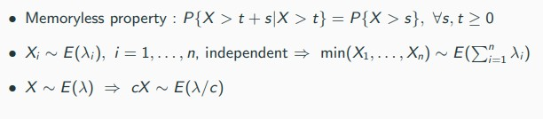
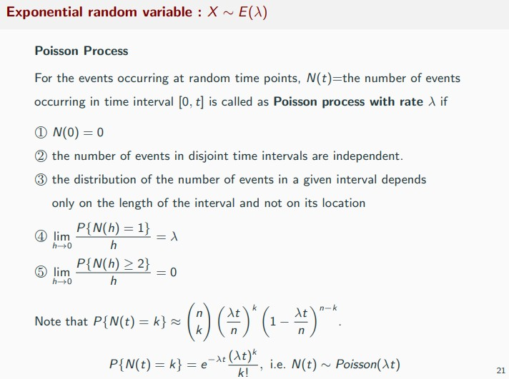
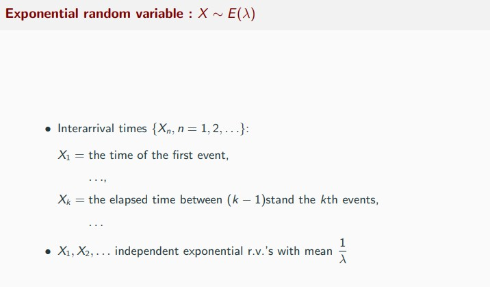

00. Distribution Summary
Preliminaries and Notation
- 알아두면 유용한 것들
Discrete r.v \(\to\) pmf, Continuous r.v \(\to\) pdf
Gamma function quick facts (\(\Gamma\))
\[\Gamma(\alpha) = \int_{0}^{\infty} x^{\alpha-1}e^{-x}\,dx \]
\[\Gamma(\alpha + 1) = \alpha\Gamma(\alpha),\quad \Gamma(n) = (n-1)!, \quad \Gamma(1/2) = \pi \]
Discrete Random Variables
For a discrete random variable, its distribution is specified by a probability mass function(pmf)
Bernoulli
- \(X=\) 성공확률이 \(p\)인 베르누이 시행에서 결과가 성공이면 1, 실패면 0
- Bernoulli experexperiment(trial) - the experiment whose outcome can be classified as either
successorfailure
\[X \sim Ber(p), \quad X = \begin{cases} 1 \quad \text{'Success'} \\ \\ 0 \quad \text{'Failiure'} \end{cases} \]
\[f(x) = p^{x}(1-p)^{1-x},\quad F(x) = \begin{cases} 0 \quad (x<0) \\ \\ 1-p \quad (0\leq x<1) \\ \\ 1 \quad (x\geq 1)\end{cases}, \quad M(t) = 1-p+pe^{t}\]
\[E(X) = p, \quad Var(x) = p(1-p), \quad \hat{p}_{mle} = \bar X, \quad \hat{p}_{mvue} = \bar X\]
\[\divideontimes \,\, \sum X_i \sim Bin(n,p)\]
Binomial
- \(X =\) 베르누이 시행을 독립적으로 \(n\)번 반복할 때 나오는 성공의 수
- Binomial experiment(trail) - \(n\) independent Bernoulli experiments with the
successprobability \(p\)
\[X \sim Bin(n,p), \quad X = 0,1,2, \dots n\]
\[f(x) = \binom{n}{x} p^{x}(1-p)^{n-x}, \quad F(x) = \sum_{k=0}^{x} \binom{n}{k}p^{k}(1-p)^{n-k},\quad M(t) = (1-p + pe^{t})^{n} \]
\[E(X) = np, \quad Var(X) = np(1-p), \quad \hat{p}_{mle} = X/n, \quad \hat{p}_{mvue} = \bar X/n \]
\[\divideontimes\,\, Bin(1,p) = Ber(p)\]
- 이항분포 mle 증명 필요….
Gemmetric
- \(X=\) 서로 독립인 베르누이 시행을 반복할 때 첫번째 성공이 나올 때까지 시행 횟수
- the number of trials until the first success
\[X \sim Geo(p),\quad X = 1,2,\dots\]
\[f(x) = p(1-p)^{x-1}, \quad F(x) = \begin {cases}0 \quad (x<1)\\ \\ 1-(1-p)^{x} \quad (x \geq 1) \end{cases}, \quad M(t) = \frac{pe^{t}}{1-qe^{t}}\,\,(t<-\ln q)\]
\[E(X) = 1/p, \quad Var(X) = q/p^{2}, \quad \hat{p}_{mle} = 1/\bar X, \quad \hat{p}_{mvue} = \frac{n-1}{\sum X_i -1} \]
\[\divideontimes \,\, NB(1,p) = Geo(p)\]
Negative Binomial
- \(X=\) 서로 독립인 베르누이 시행을 \(r\)번째 성공이 나올 때까지의 시행 횟수
\[X \sim NB(r,p), \quad X = r, r+1,r+2 \dots\]
\[f(x) = \binom{x-1}{r-1}p^{r} (1-p)^{x-r}, \quad F(x) = \sum_{k=r}^{x}\binom{x-1}{k-1}p^{r} (1-p)^{k-r}, \quad M(t) = \left(\frac{pe^{t}}{1-qe^{t}}\right)^{r}\,\,(t<-\ln q)\]
\[E(X) = r/p, \quad Var(X) = rq/p^{2}, \quad \hat{p}_{mle} = r/\bar X, \quad \hat{p}_{mvue} = \dots \]
Hypergeometric
- 전체 원소 개수가 \(n\)개이고, \(A\)그룹의 원소 개수가 \(r\)개 \(B\)그룹의 원소 개수가 \(n-r\)개일 때, 이 중에서 \(m\)개를 임의로 선택할 경우, \(A\)그룹에서 선택된 원소의 수
\[X \sim \text{Hyper}(n,m,r),\quad X = 0,1,2\dots \text{min}(r,m)\]
\[f(x) = \frac{\binom{r}{x}\binom{n-r}{m-x}}{\binom{n}{m}}, \quad \sum_{k=0}^{\text{min}(r,m)} \binom{r}{k}\binom{n-r}{m-k} = \binom{n}{m}\]
\[E(X) = m\frac{r}{n}, \quad Var(X) = m\frac{r}{n}\left(1- \frac rn\right) \frac{n-m}{n-1}\]
Poisson
- 시간 또는 공간에 따른 특정 사건의 발생 건수에 대한 확률분포로 이용됨.
\[X \sim \text{POI}(\lambda), \quad X =0,1\dots\]
\[f(x) = \frac{\lambda^{x}e^{-\lambda}}{x!}, \quad F(x) = \sum_{k=0}^{x} \frac{\lambda^{k}e^{-\lambda}}{k!},\quad M(t) = \exp \{\lambda(e^{t}-1)\}\]
\[E(x) = \lambda, \quad Var(X) = \lambda\]
- 참고 1. 포아송 이항분포 근사

- 참고 2. 서로 독립인 포아송분포의 결합 분포


Continuous Random Variables
Uniform
일정한 구간에서 임의로 선택된 수에 대한 확률분포로 이용
\[X \sim U(\alpha,\beta),\quad f(x) = \frac{1}{\beta-\alpha}I(\alpha < x < \beta)\]
\[F(x) = \begin{cases} 0 \quad (x\leq \alpha) \\ \\ \ (x-\alpha)/(\beta-\alpha) \quad (\alpha < x < \beta) \\ \\ 1 \quad (x\geq \beta)\end{cases}, \quad M(t) = \frac{e^{\beta t}-e^{\alpha t}}{t(\beta - \alpha)}\]
\[E(X) = (\alpha + \beta)/2, \quad Var(X) = (\beta-\alpha)^{2}/12\]
Exponential
포아송분포를 따르며 발생하는 사건에 대하여 첫번째 사건이 발생할 때까지 대기 시간(waiting time)의 분포
- the amount of time unitil some specific event occurs
\[X \sim \text{Exp}(1/\lambda)\]
\[f(x) = \lambda e^{-\lambda x}, \quad F(x) = 1-e^{-\lambda x}, \quad M(t) = \frac {\lambda}{\lambda - t} \,(t < \lambda)\]
\[E(X) = 1/\lambda, \quad Var(X) = 1/\lambda^2,\quad \hat{\lambda}_{mle} = 1/\bar X, \quad \hat{\lambda}_{mvue} = \frac{n-1}{\sum X}\]



Gamma
평균이 \(\lambda\)인 포아송분포를 따르며 발생하는 사건에 대하여 \(\alpha\)번째 사건이 발생할 때까지 대기 시간(waiting time)의 분포
\[X \sim \text{Gamma}(\alpha, \beta = \frac {1}{\lambda})\]
\[f(x) = \frac{1}{\Gamma(\alpha)\beta^{\alpha}}x^{\alpha-1}e^{-x/\beta}I(x>0), \quad M(t) = \left(\frac {\lambda}{\lambda - t}\right )^{\alpha} = (1-\beta t)^{-\alpha} \,(t < \lambda)\]
\[E(X) = \alpha\beta, \quad Var(X) = \alpha\beta^{2}\]
\[\divideontimes \,\, \text{Gamma}(1,\beta) = \text{Exp}(\beta = 1/\lambda)\]
\[\divideontimes \,\, X_i \sim_{iid}\text{Exp}(\lambda) \to \sum X_i \sim \text{Gamma}(n, \beta = 1 /\lambda)\]
Chi-square
Let \(Z_1,\dots Z_n\) be independent standard normal r.v’s
- 자유도가 \(n\)인 카이제곱분포
\[X \sim \chi^2_{n} \sim \text{Gamma}(\alpha = n/2, \beta = 2)\]
\[X_1, X_2=\sum Z_{i}^2 \sim \chi^2_{n}\quad \to \quad X_{1} + X_{2} \sim \chi^{2}_{n_1+n_2}\]
\[f(x) = \frac{1}{\Gamma(n/2)\,\,{2^{n/2}}} x^{n/2-1}\,\,e^{-x/2},\quad M(t) = (1-2t)^{-n/2}\]
\[E(X) = n, \quad Var(X) = 2n\]
\[\divideontimes \,\, \chi_{\alpha,n}^{2}:100(1-\alpha)\text{ percentile of }\chi^2_{n} \text{ i.e. } \to P(\chi_{n}^2>\chi_{\alpha,n}^2) = \alpha\]
Beta
유한 구간에서 값을 가지는 변수의 분포로 이용
\[X \sim \text{Beta}(\alpha, \beta)\]
\[f(x) = \frac{1}{B(\alpha,\beta)} x^{\alpha-1}\,\,(1-x)^{\beta-1}, \quad B(\alpha, \beta) - \frac{\Gamma(\alpha)\Gamma(\beta)}{\Gamma(\alpha+\beta)}\]
\[\text{Beta}(1,1) = U(0,1)\]
\[E(X) = \frac{\alpha}{\alpha + \beta}, \quad Var(X) = \frac{\alpha\beta}{(\alpha+\beta)^2(\alpha + \beta + 1)}\]
Normal
- 평균을 중심으로 좌우 대칭인 분포
\[X \sim N(\mu, \sigma), \quad f(x) = \frac{1}{\sqrt{2\pi}\sigma}\exp{\left ( -\frac{(x-\mu)^2}{2\sigma^2}\right)}\]
\[F(x) = \Phi\left(\frac{x-\mu}{\sigma}\right), \quad M(t) = \exp(\mu t + \sigma^2 t^2/2)\]
\[\hat{\mu}_{mle} = \bar X, \quad \hat{\sigma}^2_{mle} = \frac{1}{n} \sum (X-\bar X_i)^2\]
\[\hat{\mu}_{mvue} = \bar X, \quad \hat{\sigma}^2_{mvue} = \frac{1}{n-1} \sum (X-\bar X_i)^2\]
\[E(X) = M^{\prime}(0) = \mu, \quad E(X^2) = M^{\prime\prime}(0) = \mu^2 + \sigma^2\]